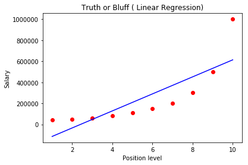
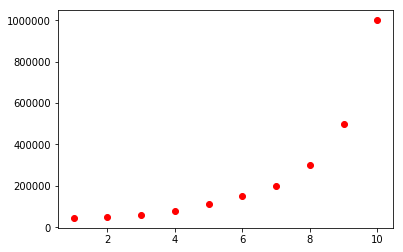
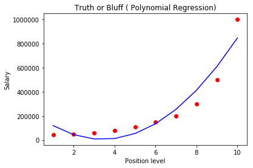
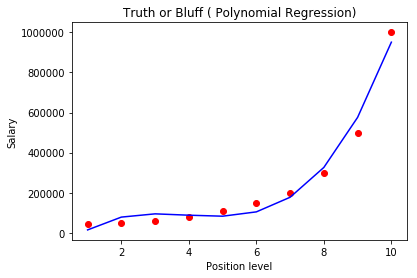
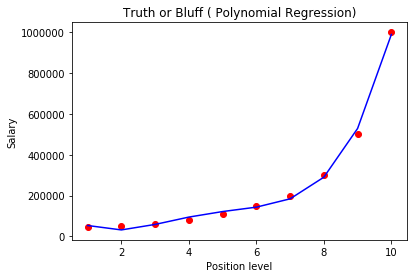

[153441.51, 101145.55, 407934.54, 'Florida'],
[144372.41, 118671.85, 383199.62, 'New York'],
[142107.34, 91391.77, 366168.42, 'Florida'],
[131876.9, 99814.71, 362861.36, 'New York'],
[134615.46, 147198.87, 127716.82, 'California'],
[130298.13, 145530.06, 323876.68, 'Florida'],
[120542.52, 148718.95, 311613.29, 'New York'],
[123334.88, 108679.17, 304981.62, 'California'],
[101913.08, 110594.11, 229160.95, 'Florida'],
[100671.96, 91790.61, 249744.55, 'California'],
[93863.75, 127320.38, 249839.44, 'Florida'],
[91992.39, 135495.07, 252664.93, 'California'],
[119943.24, 156547.42, 256512.92, 'Florida'],
[114523.61, 122616.84, 261776.23, 'New York'],
[78013.11, 121597.55, 264346.06, 'California'],
[94657.16, 145077.58, 282574.31, 'New York'],
[91749.16, 114175.79, 294919.57, 'Florida'],
[86419.7, 153514.11, 0.0, 'New York'],
[76253.86, 113867.3, 298664.47, 'California'],
[78389.47, 153773.43, 299737.29, 'New York'],
[73994.56, 122782.75, 303319.26, 'Florida'],
[67532.53, 105751.03, 304768.73, 'Florida'],
[77044.01, 99281.34, 140574.81, 'New York'],
[64664.71, 139553.16, 137962.62, 'California'],
[75328.87, 144135.98, 134050.07, 'Florida'],
[72107.6, 127864.55, 353183.81, 'New York'],
[66051.52, 182645.56, 118148.2, 'Florida'],
[65605.48, 153032.06, 107138.38, 'New York'],
[61994.48, 115641.28, 91131.24, 'Florida'],
[61136.38, 152701.92, 88218.23, 'New York'],
[63408.86, 129219.61, 46085.25, 'California'],
[55493.95, 103057.49, 214634.81, 'Florida'],
[46426.07, 157693.92, 210797.67, 'California'],
[46014.02, 85047.44, 205517.64, 'New York'],
[28663.76, 127056.21, 201126.82, 'Florida'],
[44069.95, 51283.14, 197029.42, 'California'],
[20229.59, 65947.93, 185265.1, 'New York'],
[38558.51, 82982.09, 174999.3, 'California'],
[28754.33, 118546.05, 172795.67, 'California'],
[27892.92, 84710.77, 164470.71, 'Florida'],
[23640.93, 96189.63, 148001.11, 'California'],
[15505.73, 127382.3, 35534.17, 'New York'],
[22177.74, 154806.14, 28334.72, 'California'],
[1000.23, 124153.04, 1903.93, 'New York'],
[1315.46, 115816.21, 297114.46, 'Florida'],
[0.0, 135426.92, 0.0, 'California'],
[542.05, 51743.15, 0.0, 'New York'],
[0.0, 116983.8, 45173.06, 'California']], dtype=object)
In [8]: y
Out[8]:
array(['New York', 'California', 'Florida', 'New York', 'Florida',
'New York', 'California', 'Florida', 'New York', 'California',
'Florida', 'California', 'Florida', 'California', 'Florida',
'New York', 'California', 'New York', 'Florida', 'New York',
'California', 'New York', 'Florida', 'Florida', 'New York',
'California', 'Florida', 'New York', 'Florida', 'New York',
'Florida', 'New York', 'California', 'Florida', 'California',
'New York', 'Florida', 'California', 'New York', 'California',
'California', 'Florida', 'California', 'New York', 'California',
'New York', 'Florida', 'California', 'New York', 'California'],
dtype=object)
In [9]: X = dataset.iloc[:, :-1].values
...: y = dataset.iloc[:, 4].values
In [10]: from sklearn.preprocessing import LabelEncoder,OneHotEncoder
...: labelencoder_X = LabelEncoder()
...: X[:, 3] = labelencoder_X.fit_transform(X[:, 3])
...: onehotencoder = OneHotEncoder(categorial_features = [3])
...: X = onehotencoder.fit_transform(X).toarray()
Traceback (most recent call last):
File "<ipython-input-10-bc1b72efe628>", line 4, in <module>
onehotencoder = OneHotEncoder(categorial_features = [3])
TypeError: __init__() got an unexpected keyword argument 'categorial_features'
In [11]:
In [11]: from sklearn.preprocessing import LabelEncoder,OneHotEncoder
...: labelencoder_X = LabelEncoder()
...: X[:, 3] = labelencoder_X.fit_transform(X[:, 3])
...: onehotencoder = OneHotEncoder(categorical_features = [3])
...: X = onehotencoder.fit_transform(X).toarray()
In [12]: X = X[: 1:]
...:
...: # Splitting the dataset into the training set and test set
...: from sklearn.cross_validation import train_test_split
...: X_train,X_test,y_train,y_test = train_test_split(X, y, test_size=0.2, random_state=0)
C:\Users\kaliprasad\Anaconda3\lib\site-packages\sklearn\cross_validation.py:41: DeprecationWarning: This module was deprecated in version 0.18 in favor of the model_selection module into which all the refactored classes and functions are moved. Also note that the interface of the new CV iterators are different from that of this module. This module will be removed in 0.20.
"This module will be removed in 0.20.", DeprecationWarning)
Traceback (most recent call last):
File "<ipython-input-12-32bcd6f79a48>", line 5, in <module>
X_train,X_test,y_train,y_test = train_test_split(X, y, test_size=0.2, random_state=0)
File "C:\Users\kaliprasad\Anaconda3\lib\site-packages\sklearn\cross_validation.py", line 2059, in train_test_split
arrays = indexable(*arrays)
File "C:\Users\kaliprasad\Anaconda3\lib\site-packages\sklearn\utils\validation.py", line 229, in indexable
check_consistent_length(*result)
File "C:\Users\kaliprasad\Anaconda3\lib\site-packages\sklearn\utils\validation.py", line 204, in check_consistent_length
" samples: %r" % [int(l) for l in lengths])
ValueError: Found input variables with inconsistent numbers of samples: [1, 50]
In [13]:
In [13]: X = X[: 1:]
...:
...: # Splitting the dataset into the training set and test set
...: from sklearn.cross_validation import train_test_split
...: X_train,X_test,y_train,y_test = train_test_split(X, y, test_size=0.2, random_state=0)
...:
...:
Traceback (most recent call last):
File "<ipython-input-13-32bcd6f79a48>", line 5, in <module>
X_train,X_test,y_train,y_test = train_test_split(X, y, test_size=0.2, random_state=0)
File "C:\Users\kaliprasad\Anaconda3\lib\site-packages\sklearn\cross_validation.py", line 2059, in train_test_split
arrays = indexable(*arrays)
File "C:\Users\kaliprasad\Anaconda3\lib\site-packages\sklearn\utils\validation.py", line 229, in indexable
check_consistent_length(*result)
File "C:\Users\kaliprasad\Anaconda3\lib\site-packages\sklearn\utils\validation.py", line 204, in check_consistent_length
" samples: %r" % [int(l) for l in lengths])
ValueError: Found input variables with inconsistent numbers of samples: [1, 50]
In [14]:
In [14]: X = X[:, 1:]
...:
...: # Splitting the dataset into the training set and test set
...: from sklearn.cross_validation import train_test_split
...: X_train,X_test,y_train,y_test = train_test_split(X, y, test_size=0.2, random_state=0)
Traceback (most recent call last):
File "<ipython-input-14-54b3c27b1a74>", line 5, in <module>
X_train,X_test,y_train,y_test = train_test_split(X, y, test_size=0.2, random_state=0)
File "C:\Users\kaliprasad\Anaconda3\lib\site-packages\sklearn\cross_validation.py", line 2059, in train_test_split
arrays = indexable(*arrays)
File "C:\Users\kaliprasad\Anaconda3\lib\site-packages\sklearn\utils\validation.py", line 229, in indexable
check_consistent_length(*result)
File "C:\Users\kaliprasad\Anaconda3\lib\site-packages\sklearn\utils\validation.py", line 204, in check_consistent_length
" samples: %r" % [int(l) for l in lengths])
ValueError: Found input variables with inconsistent numbers of samples: [1, 50]
In [15]:
In [15]: dataset = pd.read_csv('50_Startups.csv')
...: X = dataset.iloc[:, :-1].values
...: y = dataset.iloc[:, 4].values
...:
...: #Encoding categorical data
...: # Encoding the Independant Variable
...: from sklearn.preprocessing import LabelEncoder,OneHotEncoder
...: labelencoder_X = LabelEncoder()
...: X[:, 3] = labelencoder_X.fit_transform(X[:, 3])
...: onehotencoder = OneHotEncoder(categorical_features = [3])
...: X = onehotencoder.fit_transform(X).toarray()
...:
...: # Avoiding the dummy Variable Trap
...: X = X[:, 1:]
...:
...: # Splitting the dataset into the training set and test set
...: from sklearn.cross_validation import train_test_split
...: X_train,X_test,y_train,y_test = train_test_split(X, y, test_size=0.2, random_state=0)
In [16]: from sklearn.linear_model import LinearRegression
...: regressor = LinearRegression()
...: regressor.fit(X_train, y_train)
Out[16]: LinearRegression(copy_X=True, fit_intercept=True, n_jobs=1, normalize=False)
In [17]: y_pred = regressor.predict(X_test)
In [18]: X = np.append(arr = np.ones(50, 1).astype(int), values = X, axis = 1)
Traceback (most recent call last):
File "<ipython-input-18-a84ce41db866>", line 1, in <module>
X = np.append(arr = np.ones(50, 1).astype(int), values = X, axis = 1)
File "C:\Users\kaliprasad\Anaconda3\lib\site-packages\numpy\core\numeric.py", line 203, in ones
a = empty(shape, dtype, order)
TypeError: data type not understood
In [19]:
In [19]: import statsmodels.formula.api as sm
...: X = np.append(arr = np.ones((50, 1)).astype(int), values = X, axis = 1)
...:
In [20]: X_opt = X[:, [0, 1, 2, 3, 4, 5]]
...: regressor = _OLS = sm.OLS(endog = y, exog = X_opt).fit()
In [21]: runfile('D:/workspace/ML-Workspace/learningML/Machine_Learning_AZ/Part 2 - Regression/Section 5 - Multiple Linear Regression/multiple_linear_regression_mine.py', wdir='D:/workspace/ML-Workspace/learningML/Machine_Learning_AZ/Part 2 - Regression/Section 5 - Multiple Linear Regression')
In [22]: regressor_OLS.summary()
Out[22]:
<class 'statsmodels.iolib.summary.Summary'>
"""
OLS Regression Results
==============================================================================
Dep. Variable: y R-squared: 0.951
Model: OLS Adj. R-squared: 0.945
Method: Least Squares F-statistic: 169.9
Date: Sun, 13 Jan 2019 Prob (F-statistic): 1.34e-27
Time: 15:33:32 Log-Likelihood: -525.38
No. Observations: 50 AIC: 1063.
Df Residuals: 44 BIC: 1074.
Df Model: 5
Covariance Type: nonrobust
==============================================================================
coef std err t P>|t| [0.025 0.975]
------------------------------------------------------------------------------
const 5.013e+04 6884.820 7.281 0.000 3.62e+04 6.4e+04
x1 198.7888 3371.007 0.059 0.953 -6595.030 6992.607
x2 -41.8870 3256.039 -0.013 0.990 -6604.003 6520.229
x3 0.8060 0.046 17.369 0.000 0.712 0.900
x4 -0.0270 0.052 -0.517 0.608 -0.132 0.078
x5 0.0270 0.017 1.574 0.123 -0.008 0.062
==============================================================================
Omnibus: 14.782 Durbin-Watson: 1.283
Prob(Omnibus): 0.001 Jarque-Bera (JB): 21.266
Skew: -0.948 Prob(JB): 2.41e-05
Kurtosis: 5.572 Cond. No. 1.45e+06
==============================================================================
Warnings:
[1] Standard Errors assume that the covariance matrix of the errors is correctly specified.
[2] The condition number is large, 1.45e+06. This might indicate that there are
strong multicollinearity or other numerical problems.
"""
In [23]: X_opt = X[:, [0, 1, 3, 4, 5]]
...: regressor_OLS = _OLS = sm.OLS(endog = y, exog = X_opt).fit()
...: regressor_OLS.summary()
Out[23]:
<class 'statsmodels.iolib.summary.Summary'>
"""
OLS Regression Results
==============================================================================
Dep. Variable: y R-squared: 0.951
Model: OLS Adj. R-squared: 0.946
Method: Least Squares F-statistic: 217.2
Date: Sun, 13 Jan 2019 Prob (F-statistic): 8.49e-29
Time: 15:38:43 Log-Likelihood: -525.38
No. Observations: 50 AIC: 1061.
Df Residuals: 45 BIC: 1070.
Df Model: 4
Covariance Type: nonrobust
==============================================================================
coef std err t P>|t| [0.025 0.975]
------------------------------------------------------------------------------
const 5.011e+04 6647.870 7.537 0.000 3.67e+04 6.35e+04
x1 220.1585 2900.536 0.076 0.940 -5621.821 6062.138
x2 0.8060 0.046 17.606 0.000 0.714 0.898
x3 -0.0270 0.052 -0.523 0.604 -0.131 0.077
x4 0.0270 0.017 1.592 0.118 -0.007 0.061
==============================================================================
Omnibus: 14.758 Durbin-Watson: 1.282
Prob(Omnibus): 0.001 Jarque-Bera (JB): 21.172
Skew: -0.948 Prob(JB): 2.53e-05
Kurtosis: 5.563 Cond. No. 1.40e+06
==============================================================================
Warnings:
[1] Standard Errors assume that the covariance matrix of the errors is correctly specified.
[2] The condition number is large, 1.4e+06. This might indicate that there are
strong multicollinearity or other numerical problems.
"""
In [24]: X_opt = X[:, [0, 3, 4, 5]]
...: regressor_OLS = _OLS = sm.OLS(endog = y, exog = X_opt).fit()
...: regressor_OLS.summary()
Out[24]:
<class 'statsmodels.iolib.summary.Summary'>
"""
OLS Regression Results
==============================================================================
Dep. Variable: y R-squared: 0.951
Model: OLS Adj. R-squared: 0.948
Method: Least Squares F-statistic: 296.0
Date: Sun, 13 Jan 2019 Prob (F-statistic): 4.53e-30
Time: 15:40:42 Log-Likelihood: -525.39
No. Observations: 50 AIC: 1059.
Df Residuals: 46 BIC: 1066.
Df Model: 3
Covariance Type: nonrobust
==============================================================================
coef std err t P>|t| [0.025 0.975]
------------------------------------------------------------------------------
const 5.012e+04 6572.353 7.626 0.000 3.69e+04 6.34e+04
x1 0.8057 0.045 17.846 0.000 0.715 0.897
x2 -0.0268 0.051 -0.526 0.602 -0.130 0.076
x3 0.0272 0.016 1.655 0.105 -0.006 0.060
==============================================================================
Omnibus: 14.838 Durbin-Watson: 1.282
Prob(Omnibus): 0.001 Jarque-Bera (JB): 21.442
Skew: -0.949 Prob(JB): 2.21e-05
Kurtosis: 5.586 Cond. No. 1.40e+06
==============================================================================
Warnings:
[1] Standard Errors assume that the covariance matrix of the errors is correctly specified.
[2] The condition number is large, 1.4e+06. This might indicate that there are
strong multicollinearity or other numerical problems.
"""
In [25]: X_opt = X[:, [0, 3, 5]]
...: regressor_OLS = _OLS = sm.OLS(endog = y, exog = X_opt).fit()
...: regressor_OLS.summary()
Out[25]:
<class 'statsmodels.iolib.summary.Summary'>
"""
OLS Regression Results
==============================================================================
Dep. Variable: y R-squared: 0.950
Model: OLS Adj. R-squared: 0.948
Method: Least Squares F-statistic: 450.8
Date: Sun, 13 Jan 2019 Prob (F-statistic): 2.16e-31
Time: 15:41:59 Log-Likelihood: -525.54
No. Observations: 50 AIC: 1057.
Df Residuals: 47 BIC: 1063.
Df Model: 2
Covariance Type: nonrobust
==============================================================================
coef std err t P>|t| [0.025 0.975]
------------------------------------------------------------------------------
const 4.698e+04 2689.933 17.464 0.000 4.16e+04 5.24e+04
x1 0.7966 0.041 19.266 0.000 0.713 0.880
x2 0.0299 0.016 1.927 0.060 -0.001 0.061
==============================================================================
Omnibus: 14.677 Durbin-Watson: 1.257
Prob(Omnibus): 0.001 Jarque-Bera (JB): 21.161
Skew: -0.939 Prob(JB): 2.54e-05
Kurtosis: 5.575 Cond. No. 5.32e+05
==============================================================================
Warnings:
[1] Standard Errors assume that the covariance matrix of the errors is correctly specified.
[2] The condition number is large, 5.32e+05. This might indicate that there are
strong multicollinearity or other numerical problems.
"""
In [26]: X_opt = X[:, [0, 3]]
...: regressor_OLS = _OLS = sm.OLS(endog = y, exog = X_opt).fit()
...: regressor_OLS.summary()
Out[26]:
<class 'statsmodels.iolib.summary.Summary'>
"""
OLS Regression Results
==============================================================================
Dep. Variable: y R-squared: 0.947
Model: OLS Adj. R-squared: 0.945
Method: Least Squares F-statistic: 849.8
Date: Sun, 13 Jan 2019 Prob (F-statistic): 3.50e-32
Time: 15:45:32 Log-Likelihood: -527.44
No. Observations: 50 AIC: 1059.
Df Residuals: 48 BIC: 1063.
Df Model: 1
Covariance Type: nonrobust
==============================================================================
coef std err t P>|t| [0.025 0.975]
------------------------------------------------------------------------------
const 4.903e+04 2537.897 19.320 0.000 4.39e+04 5.41e+04
x1 0.8543 0.029 29.151 0.000 0.795 0.913
==============================================================================
Omnibus: 13.727 Durbin-Watson: 1.116
Prob(Omnibus): 0.001 Jarque-Bera (JB): 18.536
Skew: -0.911 Prob(JB): 9.44e-05
Kurtosis: 5.361 Cond. No. 1.65e+05
==============================================================================
Warnings:
[1] Standard Errors assume that the covariance matrix of the errors is correctly specified.
[2] The condition number is large, 1.65e+05. This might indicate that there are
strong multicollinearity or other numerical problems.
"""
In [27]: import pandas as pd
...: import numpy as np
...: import matplotlib.pyplot as plt
...:
...: # Importing the dataset
...: dataset = pd.read_csv('Position_Salaries.csv')
In [28]:
Removing all variables...
In [28]: import pandas as pd
...: import numpy as np
...: import matplotlib.pyplot as plt
...:
...: # Importing the dataset
...: dataset = pd.read_csv('Position_Salaries.csv')
In [29]: X = dataset.iloc[:, 1:2].values
...: y = dataset.iloc[:, 2].values
In [30]: from sklearn.linear_model import LinearRegression
...: lin_reg = LinearRegression()
...: lin_reg.fit(X, y)
Out[30]: LinearRegression(copy_X=True, fit_intercept=True, n_jobs=1, normalize=False)
In [31]: from sklearn.preprocessing import PolynomialFeatures
...: ploy_reg = PolynomialFeatures(degree = 2)
...: X_poly = ploy_reg.fit_transform(X)
In [32]: plt.scatter(X, y, color = 'red')
...: plt.plot(X, lin_reg.predict(X), color = 'blue')
...: plt.title('Truth or Bluff ( Linear Regression)')
...: plt.xlabel('Position level')
...: plt.ylabel('Salary')
...: plt.show()

In [33]: plt.scatter(X, y, color = 'red')
...: plt.plot(X, lin_reg_2.predict(ploy_reg.fit_transform(X)), color = 'blue')
...: plt.title('Truth or Bluff ( Polynomial Regression)')
...: plt.xlabel('Position level')
...: plt.ylabel('Salary')
...: plt.show()
Traceback (most recent call last):
File "<ipython-input-33-50b510dca88d>", line 2, in <module>
plt.plot(X, lin_reg_2.predict(ploy_reg.fit_transform(X)), color = 'blue')
NameError: name 'lin_reg_2' is not defined

In [34]:
In [34]: from sklearn.preprocessing import PolynomialFeatures
...: ploy_reg = PolynomialFeatures(degree = 2)
...: X_poly = ploy_reg.fit_transform(X)
...: lin_reg_2 = LinearRegression()
...: lin_reg_2.fit(X_poly, y)
Out[34]: LinearRegression(copy_X=True, fit_intercept=True, n_jobs=1, normalize=False)
In [35]: plt.scatter(X, y, color = 'red')
...: plt.plot(X, lin_reg_2.predict(ploy_reg.fit_transform(X)), color = 'blue')
...: plt.title('Truth or Bluff ( Polynomial Regression)')
...: plt.xlabel('Position level')
...: plt.ylabel('Salary')
...: plt.show()

In [36]: from sklearn.preprocessing import PolynomialFeatures
...: ploy_reg = PolynomialFeatures(degree = 3)
...: X_poly = ploy_reg.fit_transform(X)
...: lin_reg_2 = LinearRegression()
...: lin_reg_2.fit(X_poly, y)
Out[36]: LinearRegression(copy_X=True, fit_intercept=True, n_jobs=1, normalize=False)
In [37]: plt.scatter(X, y, color = 'red')
...: plt.plot(X, lin_reg_2.predict(ploy_reg.fit_transform(X)), color = 'blue')
...: plt.title('Truth or Bluff ( Polynomial Regression)')
...: plt.xlabel('Position level')
...: plt.ylabel('Salary')
...: plt.show()

In [38]: from sklearn.preprocessing import PolynomialFeatures
...: ploy_reg = PolynomialFeatures(degree = 4)
...: X_poly = ploy_reg.fit_transform(X)
...: lin_reg_2 = LinearRegression()
...: lin_reg_2.fit(X_poly, y)
Out[38]: LinearRegression(copy_X=True, fit_intercept=True, n_jobs=1, normalize=False)
In [39]: plt.scatter(X, y, color = 'red')
...: plt.plot(X, lin_reg_2.predict(ploy_reg.fit_transform(X)), color = 'blue')
...: plt.title('Truth or Bluff ( Polynomial Regression)')
...: plt.xlabel('Position level')
...: plt.ylabel('Salary')
...: plt.show()

In [40]: